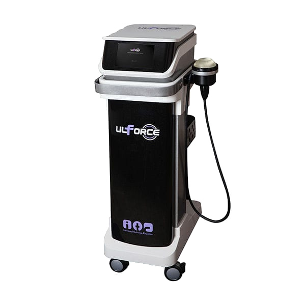
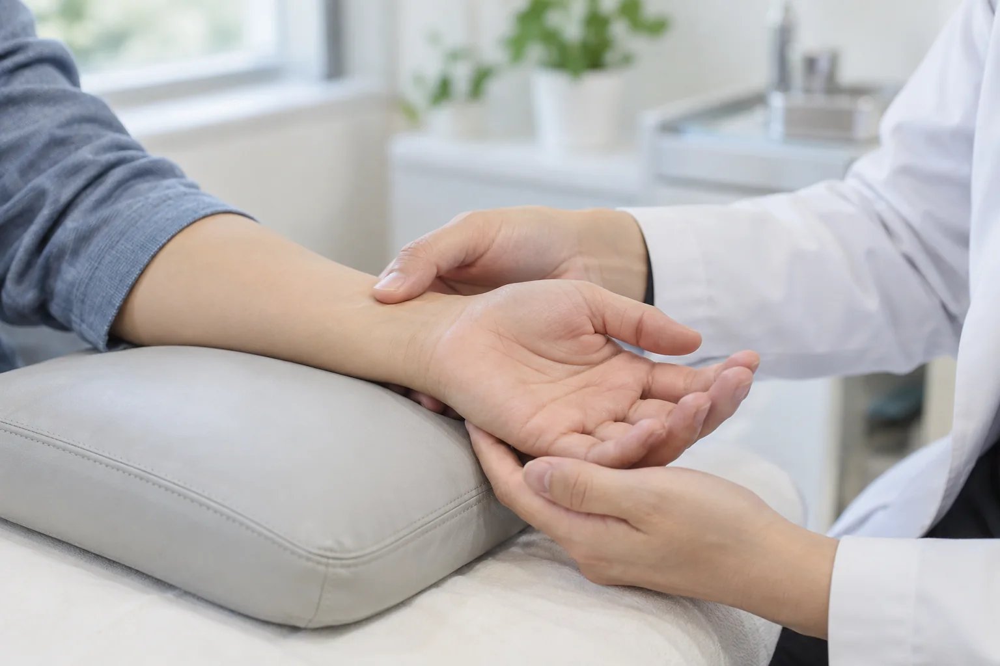

ESWT CARE
조직 회복을 돕는 체외충격파
단순한 통증 완화를 넘어, 손상된 힘줄과 인대를 근본적으로 재생시킵니다.
체외충격파 치료는 병변 부위에 강력한 음파 에너지를 전달하여 혈류량을 획기적으로 증가시키고, 신생 혈관 형성을 유도하여 손상된 조직의 자연 회복을 돕는 대표적인 비수술 재생 치료입니다.

POINT 3
기통찬 체외충격파 핵심 포인트
근본적인 조직 재생 유도
일시적인 통증 차단이 아닌, 손상된 힘줄과 인대 조직 본연의 회복력을 끌어올려 통증의 원인을 바로잡습니다.
석회 분쇄 및 만성 염증 완화
어깨 등에 단단하게 굳은 석회 물질을 분쇄·흡수시키고 잘 낫지 않던 만성 힘줄 염증을 효과적으로 개선합니다.
부작용 및 절개 부담 없는 안전함
마취, 절개, 약물 투여가 없어 절개와 흉터에 대한 부담이나 스테로이드 부작용 걱정 없이 안심하고 받으실 수 있습니다.
WHAT MAKES IT DIFFERENT
여의도기통찬의 특별함
합리적이고 양심적인 비용 책정
치료 부담을 낮추고 필요한 치료를 지속해서 받으실 수 있도록 주변보다 합리적인 기준의 비용을 적용합니다.
환자별 맞춤 강도 & 1:1 세심한 케어
무작정 강한 충격파를 가하기보다 환자의 통증 유병 기간, 민감도, 부위별 특성을 종합적으로 고려하여 최적의 파장과 강도로 세심하게 치료합니다.
INDICATION
주요 적용 질환
질환별 특성과 치료가 필요한 부위를 사진과 함께 살펴보세요.

